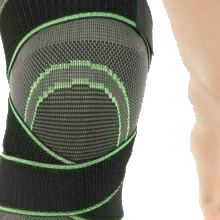
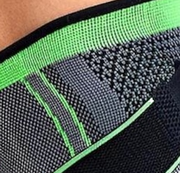
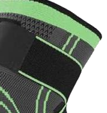
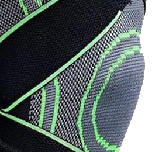
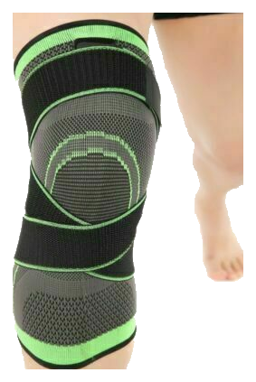
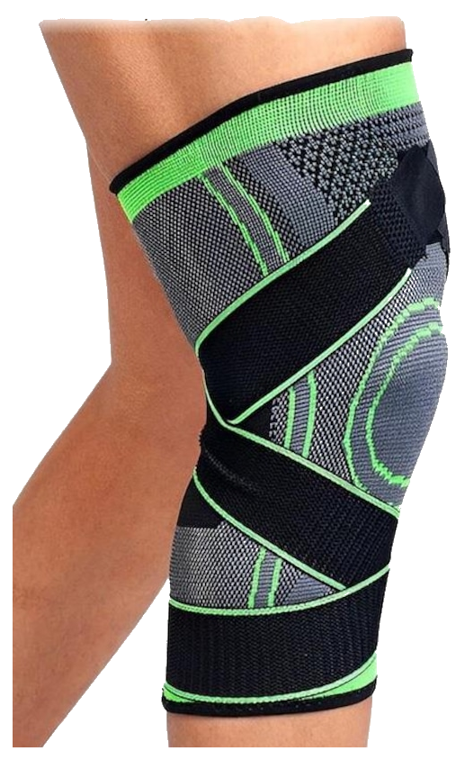
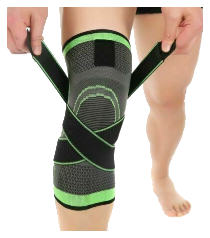
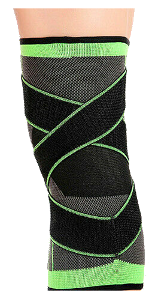

Sustentação no lugar certo
O anel de reforço contorna a patela e distribui a compressão de forma uniforme.
Joelheira de compressão · Flex Pro
Compressão firme, malha respirável e ajuste que não escorrega. Uma peça para treinar, jogar e viver o dia a dia sem parar.

Pressão firme na medida para sustentar o joelho durante o movimento.
Malha vazada que ajuda a manter a pele seca e fresca durante o uso.
Faixa com velcro para você calibrar o aperto sem escorregar no treino.
Costuras planas e tecido macio para usar sem incômodo por horas.
Por que Flex Pro
Nada de sobra e nada de menos: cada parte da peça tem uma função clara no conforto e na estabilidade.

O anel de reforço contorna a patela e distribui a compressão de forma uniforme.

Zonas de malha vazada liberam o calor sem abrir mão da firmeza no movimento.

Faixa de velcro com fixação firme, mesmo nos treinos mais intensos.

Costuras planas, bordas reforçadas e tecido que não perde a forma com o uso.
Tecnologia
Do reforço patelar ao velcro, a construção foi pensada para você esquecer que está usando — e lembrar só do movimento.

01 · Joelho
Reforço em formato de anel que contorna a patela e ajuda a manter a joelheira posicionada durante a flexão.

02 · Malha
Malha leve com zonas vazadas que ajudam a evacuar o calor e a manter a pele seca por mais tempo.

03 · Ajuste
Duas faixas com velcro permitem calibrar a compressão e o encaixe do jeito que o seu corpo pede.

04 · Estrutura
Formato anatômico com bordas elásticas que moldam a perna sem apertar demais nem enrolar.
Galeria
Fotos reais da peça e duas vistas exclusivas geradas a partir do modelo 3D.
Clique em uma foto para ampliar
Imagens ilustrativas. As vistas superior e inferior são geradas em 3D.
Como usar
Quatro passos para um ajuste confortável — e para a peça ficar exatamente onde deve.
Puxe pela barra superior com cuidado. O anel da patela fica na frente do joelho.
Fixe o velcro com pressão firme e confortável. Você sente a compressão, não o aperto.
Dobre o joelho algumas vezes e ajuste até a peça acompanhar sem escorregar.
Após o uso, lave à mão com sabão neutro e seque à sombra. Não use máquina de secar.
Para quem é
Do treino pesado ao dia corrido, a Flex Pro acompanha o seu ritmo.
Estabilidade para os quilômetros de rua e de esteira.
Firmeza nos agachamentos, leg press e treinos de força.
Compressão que acompanha mudanças de direção e chutes.
Conforto nas pedaladas longas, dentro e fora da cidade.
Suporte leve para quem passa horas em pé no dia a dia.
Caminhadas, escadas e tarefas com mais conforto no joelho.
Tamanhos
Meça a circunferência do joelho com a perna relaxada. Na dúvida entre dois tamanhos, escolha o maior.
| Tamanho | Joelho (circunferência) | Altura da peça |
|---|---|---|
| P | 30–34 cm | 28 cm |
| M Recomendado | 35–38 cm | 30 cm |
| G | 39–43 cm | 32 cm |
| GG | 44–48 cm | 34 cm |
Passe a fita ao redor do centro do joelho, com a perna relaxada. A fita deve ficar justa, sem apertar.
Escolha o maior. O velcro permite ajustar a compressão, mas não aumenta a peça.
Fale com a gente: +55 81 9449-0520 e ajudamos a escolher.
Especificações
Tudo o que você precisa saber antes de escolher a sua Flex Pro.
Cores
A cor muda as faixas e os detalhes da peça. A estrutura, o tecido e o conforto continuam os mesmos.
As fotos do site e o modelo 3D acompanham a cor escolhida.
Avaliações
“Usei na corrida de rua e a joelheira não escorregou nenhuma vez. O ajuste do velcro faz toda a diferença.”
“Treino de força quatro vezes por semana e a compressão se mantém firme do começo ao fim. Muito confortável.”
“Joguei futebol com ela e gostei do encaixe. A malha respira bem e não esquenta como outras que já usei.”
Avaliações ilustrativas para demonstração do layout. Substitua pelos depoimentos reais dos seus clientes.
Meça a circunferência do joelho com a perna relaxada e compare com a nossa tabela. Se estiver entre dois tamanhos, escolha o maior — o velcro permite ajustar a compressão.
Cada pedido inclui 1 par (2 joelheiras), uma para cada joelho.
Sim. Ajuste as faixas para uma compressão confortável e confira o encaixe antes de começar. Se sentir desconforto, reduza o aperto ou interrompa o uso.
A malha tem zonas vazadas e secagem rápida, o que ajuda a manter a pele mais fresca e seca durante o uso.
Lave à mão com água fria e sabão neutro. Não use alvejante, amaciante ou máquina de secar. Seque à sombra e guarde em local seco.
Não. A estrutura, a malha e o velcro são os mesmos em todas as versões. O que muda são as faixas e os detalhes de cor.
Você tem 7 dias de garantia contra defeitos de fabricação. O prazo de entrega depende do seu CEP e aparece no checkout.
Não. A Flex Pro é um produto esportivo de compressão e não substitui avaliação, diagnóstico ou orientação de um profissional de saúde.
Garantia e entrega
Cobertura contra defeitos de fabricação. Se algo vier errado, resolvemos para você.
Postagem em até 24h úteis após a confirmação do pagamento. Rastreio enviado por e-mail.
Recebeu o tamanho errado? Fale com a gente em até 30 dias e combinamos a troca.
Garanta a sua
Escolha a cor, confira a tabela de tamanhos e leve a Flex Pro para o próximo treino.
R$ 79,90 à vista
até 12x de R$ 8,24
Compra segura · troca facilitada